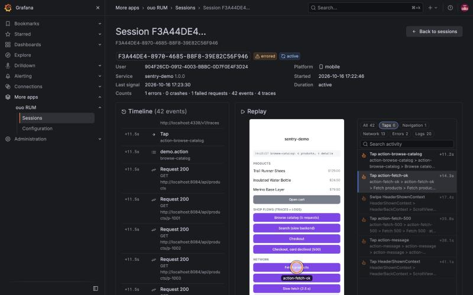
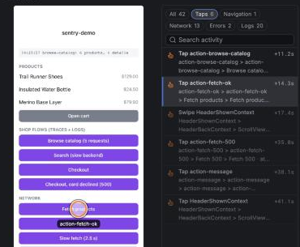
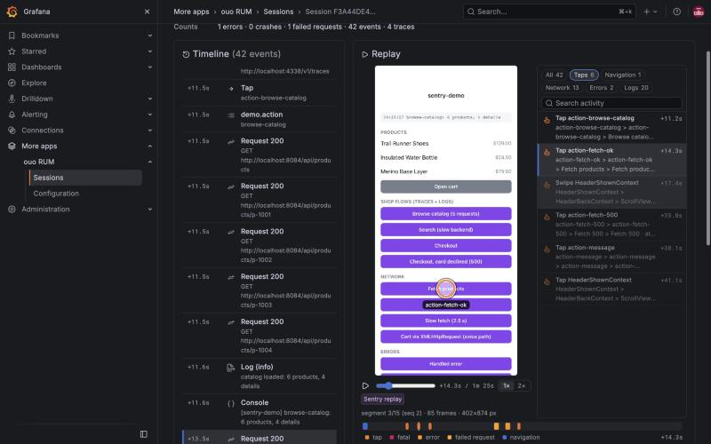
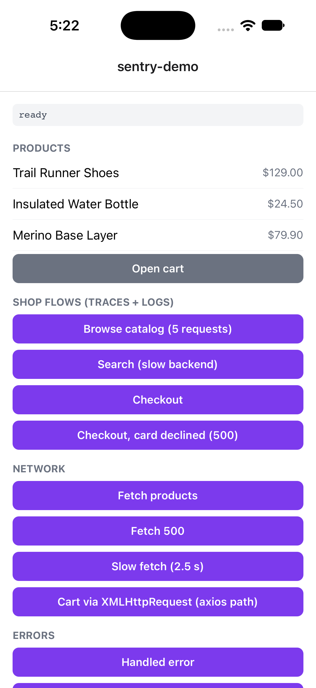

grafana-plugin, 2026-10-16. Plugin ouo-rum-app 0.6.0 in the isolated stack ouo-taps
(Grafana 13.2.1 on :3005, rum-api :8093, Sentry bridge :4360). App examples/sentry-mobile
(@sentry/react-native 8.30.0, sentry-cocoa 9.30.1) on the iPhone 18 Pro simulator (iOS 27), driven with
real simulator taps, no deep links. Session F3A44DE4-8970-4685-B8F8-39E82C56F946.
| Layer | Check | Result |
|---|---|---|
| Sentry SDK | Real taps produce rrweb touch events and ui.tap breadcrumbs? | yes: 7 gestures, 6 breadcrumbs, each breadcrumb 80 to 150 ms after its touch start |
| Receiver | Touches in the chunk, breadcrumbs as ui.tap? | yes, golden realtap / TestGoldenRealTap; no change |
| Journey script | Does the scripted journey create touches? | no: mailbox / deep links only, so 144 of 145 stored chunks in ouo-sb had no touches |
| Plugin overlay | Scaling and timing of the drawn touch | correct |
| Plugin overlay | Visible enough at 1 fps? | weak: a plain dot fading from 0 ms, two dots per tap, no label |
| Plugin scrubber | ui.tap markers? | no: ui.tap is type: custom, not a marker kind |
| Plugin layout | List of taps next to the player? | no: only the Timeline panel on the left |
rum-api /v1/sessions/F3A44DE4.../replay/video: 11 segments (15 by the end), 14 touches +11228 ms (201,418) began / +11231 ended ui.tap 14:22:57.651 action-browse-catalog +14297 ms (201,629) began / ended ui.tap 14:23:00.695 action-fetch-ok +17366 ms (300,700) began, moved to (300,400) ui.tap 14:23:03.740 HeaderShownContext (swipe) +35004 ms (201,404) began / ended ui.tap 14:23:21.393 action-fetch-500 +38062 ms (201,660) began / ended ui.tap 14:23:24.468 action-message +41127 ms (330,852) began / ended ui.tap 14:23:27.517 HeaderShownContext (empty space)



+11.2s action-browse-catalog 1.00 +12.2s 1.00 +12.5s 0.50 +12.7s 0.01 +13.0s none +14.5s action-fetch-ok 1.00 +15.2s 1.00 +15.5s 0.65 +15.7s 0.14
Each tap is fully visible for 1 s, then fades out by 1.5 s, so at Sentry's ~1 fps at least one frame shows it fully.
npm test), typecheck and lint clean (3 old Select warnings), build green.go test ./... and go vet green in collector/receiver/ouosentryreceiver, new TestGoldenRealTap.